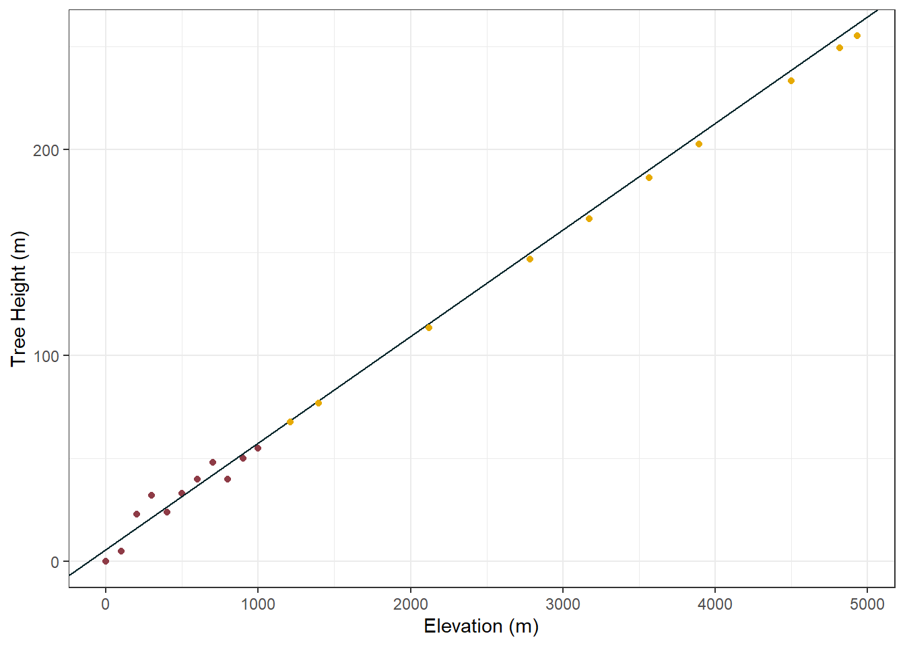

“Modelling” has become a pretty big buzz word these days, almost as much as “AI”. “Why cant you just use AI for that?”, “Can you just model it?” The unfortunately reality is these terms are often too complicated to concisely explain, which is one of the root causes of their misuse. In this blog I go back to basics and try to build an understanding of the fundamentals that will help us all answer those tricky questions in the future.
1 Introduction
In this blog I would like to explore the basics of data modelling using the tidymodels set of packages in R. If you’re anything like me the phrase “modelling” has probably come to fill you with doubt. The term is often thrown around loosely and could apply to everything from simple regression, all the way to some crazy AI implimentation that only 2 people in the entire world understand. It can be hard to differentiate between these extremes, and to the lay person sometimes these are basically the same thing. I have imagined several scenarios in which I say “model” to a manager and they picture the next AI revolution has come to fix all of their problems (what I actually mean is I did some linear regression).
To combat this, for my own peace of mind, and hopefully yours, I have decided to write a blog (or two) about learning how to use the tidymodels packages in R. Ideally, by the end of this series we are both able to explain in more detail exactly what we are doing to our colleagues.
2 Linear Regression
To start off with I’d like to explore linear regression. Lets create a hypothetical dataset of tree height and elevation. In this dataset we are going to say that this species of tree likes to grow at high elevations. Therefore as elevation increases, so does tree height. Why do these tree like high ground? I don’t know. What makes them grow taller? Who cares. Is this scenario realistic? No, but it makes for a very clear story telling experience. Let’s go:
2.1 Building A Dataset
The first thing we need to do is build a dataset that explores this relationship between elevation and tree_height. I am going to manually add 11 elevations values evenly spaced between 0m and 1000m, and then assign tree heights to each elevation. Note that we want to show a relationship so I will deliberately increase tree heights as elevation increases, however to make things interesting I will make sure it is not a completely perfect reationship.
Code
library(tidymodels)library(gt)#create an example dataset, note that we are being very delibrate to make tree height increase with elevationtree_height_x_elevation_df <-data.frame(elevation =seq(0, 1000, 100),tree_height =c(0,5,23,32,24,33,40,48,40,50,55))
On a plot, this is how our make believe data looks, obviously the trend is pretty easy to spot since we specifically created the data for this purpose:
Code
#create a simple plot to show the data pointswggplot(tree_height_x_elevation_df, aes(x = elevation, y = tree_height)) +geom_point(col ="#8E3B46") +labs(x ="Elevation (m)", y ="Tree Height (m)") +theme_bw()
2.2 Building A Linear Regression Model
To make a linear model using this dataset we are going to leverage the tidymodels() package, which is actually a wrapper for a collection of packages that do a wide range of things within the modelling ecosystem such as preparing data, creating models, and evaluating model performance. Making a linear model is actually pretty straight forward when we use these packages, there are only really three steps:
Define the model to be used (for us this is a linear regression)
Define the “engine” that runs the model (for us there is only one option “linear model”, but for more complex models there are multiple methods of implementation)
Fit the model, i.e. input the required variables (for us our independant variable is elevation, and our dependent variable is tree height)
Note
When you are using “real” data that wasn’t made up for educational purposes there are extra steps in the model building stage focused on properly preparing the data such as removing colinearity and normalsing numeric data to have a standard deviation of one. But we are not going to cover those in this example.
Note
Interestingly, for a lot of models (not just linear regression) made using tidymodels packages, these general steps are almost the same. You can swap out a different model and engine while keeping the same inputs if you wanted.
The code to create our linear model is as follows:
Code
#create a linear model based on the example datamy_lin_mod <-linear_reg() |>#set up the frameworkset_engine("lm") |>#choose the linear model method as the "engine"fit(tree_height ~ elevation, data = tree_height_x_elevation_df) #dependent ~ independent, define the dataset
Next, to view the model that we just created we can use the tidy() function to return a nice layout:
Code
#get a nicer view of the information inside the objectgt(tidy(my_lin_mod))
term
estimate
std.error
statistic
p.value
(Intercept)
6.63636364
3.494899865
1.898871
9.005051e-02
elevation
0.05036364
0.005907459
8.525431
1.326928e-05
Which, on its own, it is not really anything special - just a table. But intepreting the table can allow us to understand a bit about the linear regression model that we just created.
The intercept estimate is the y-intercept (where the regression line crosses the y axis)
The elevation estimate is the slope of the regression line
Together, these define the equation of the regression line, which would be: y(pred) = 6.64 + 0.05x
Putting this line on the plot from earlier demonstrates this nicely:
Code
ggplot(tree_height_x_elevation_df, aes(x = elevation, y = tree_height)) +geom_point(col ="#8E3B46") +geom_abline(slope =0.0517, intercept =6.24, col ="#00252A") +labs(x ="Elevation (m)", y ="Tree Height (m)") +theme_bw()
Pretty cool. Note how the regression line seems to split right down the middle of all our datapoints, the close the line is to all the points, the better our model is “fitted” to the data. Speaking of model fit, we can now look at the “fit” (i.e. the accuracy) of our model by the numbers!
2.3 Evaluating a Linear Regression Model
The performance of a linear model can be evaluated several ways, and we are going to touch on pretty much all of them. Firstly lets bring up the tabular summary of the model again:
Code
#re print the tabular summary of the modelgt(tidy(my_lin_mod))
term
estimate
std.error
statistic
p.value
(Intercept)
6.63636364
3.494899865
1.898871
9.005051e-02
elevation
0.05036364
0.005907459
8.525431
1.326928e-05
Looking at the table again there are a few additional columns to cover, these speak to the accuracy of the regression line.
The std.error column is the standard error of the estimate, with smaller values indicating greater precision. You can think of this as how each of the observations are from the regression line.
The statistic is the estimate divided by the std.error. In this case large values are often a case for some kind of statistical significance (that is to say that the std.error is much smaller than what ever the estimate value is).
The p.value is the one familar to most introductory statistics students, and represents the likelihood of randomly observing the slope (estimate for dependent variable - e.g. elevation). I.e. if elevation had no real effect on tree height (slope of the regression line = 0), then the chances of getting a slope as large as 0.05 just from random noise are about 0%.
So why is one row significant and one row not? Well the first row is talking about the intercept. It is saying, is the intercept statistically different from 0? I.e., when elevation is 0, is a tree of 6.64m any more or less likely than a tree of 0m? The answer is no (because the p value is high (>0.05) and the statistic is low we don’t have any strong evidence to disprove this). Conversely, the second row the table is talking about the slope. It is saying, is the slope significantly different from 0? (zero being no relation) I.e. Does tree height change with elevation? The answer is yes - because the p value is low (<0.05) and the statistic is high we have strong evidence to disprove the null hypothesis. Further more, because the slope is positive, not negative, we can say that tree height increases with elevation.
Note
There are additional methods for evalutation the performance of our model, but we will explore these further into the blog.
2.4 Using a Linear Regression Model
Now that we have established our linear model is not useless, what is the point of the model, and how do we use it? Well point 1 is simply to be able to confirm “yes, tree height does change with elevation”, congratulations we can all go home. But that is kind of boring and doesn’t have a satisifying conclusion, particularly because we specifically made this data up to have that relationship. Point 2 is that we can use this model to predict the height of trees that we have never observed before.
Imagine that the data I just made up is from Hill A, and just over the way, is a second hill; Hill B:
Unfortunately there is no road to get to that hill and all you know about the hill is its elevation profile, but your team is particularly interested in the height of trees there. If we assume that the tree species is the same on each hill, we can use our fancy new model to predict the height of the trees on Hill B, without ever going there.
This is acheived using the predict() function from the tidymodels group of packages. To use predict, obviously I need to create some elevation data for Hill B for us to predict on, so I will also do that here.
Code
#create another set of fake data, this time its is the elevation of Hill B, it will not contain tree height - we are going to predict thathill_b_elevation <-data.frame(elevation =c(317, 842, 569, 74, 926, 458, 13, 731, 287, 652))#use the linear model to predict valueshill_b_output <- my_lin_mod |>predict(hill_b_elevation) #note that the column name must match what was used in the model#view the outputgt(hill_b_output)
.pred
22.601636
49.042545
35.293273
10.363273
53.273091
29.702909
7.291091
43.452182
21.090727
39.473455
The output of the predict function is provided as a table, rather than a vector, because a common next step with the predicted values is to join them back to the original elevation values. Thus we will do that now:
Code
#add the columns from the original dataset onto the predicted valueshill_b_output <- hill_b_output |>bind_cols(hill_b_elevation)#view the datagt(hill_b_output)
.pred
elevation
22.601636
317
49.042545
842
35.293273
569
10.363273
74
53.273091
926
29.702909
458
7.291091
13
43.452182
731
21.090727
287
39.473455
652
And now we have predicted tree height values for trees on Hill B, without ever having gone to that hill! Thats fun.
Also here is a visualisation of the new data combined with the old data. Something that might not be clear until seeing this that each of the predictions land exactly on the regression line:
Code
#plot the original data, the line from the linear model, and the predicted datggplot() +geom_point(data = tree_height_x_elevation_df, aes(x = elevation, y = tree_height), col ="#8E3B46") +geom_abline(slope =0.0517, intercept =6.24, col ="#00252A") +geom_point(data = hill_b_output, aes(x = elevation, y = .pred), col ="#E6AA04") +labs(x ="Elevation (m)", y ="Tree Height (m)") +theme_bw()
What probably comes to mind looking at this is “how accurate is this line?” Yes we know that the linear model proved there was a significant relationship between elevation and tree height, but how strong is the relationship? How accurate is that line on the graph?
An easy way to test the accuracy of the model is to have some training data, and some testing data. Training data is data used to train the model. This data is like the red dots on our graph, for each data point we know both the height of the tree, and the elevation. The training data is shown to the model, and the regression line is created. Testing data is additional data that we withhold from the model.
Note that in the testing dataset we also know both the height of the tree, and the elevation. Generally, training data and testing data come from the same parent dataset, and each group is created randomly. The training dataset normally receives about 80% of the total data, and 20% of the data is withheld for testing, however the split could be whatever you want - if you can justify it.
To split the dataset into testing and training we can use the initial_split() function:
Code
#create a split of the datat_e_split <-initial_split(tree_height_x_elevation_df)
Note that the output of this is no longer just a df, it is a rplit object. When looking at it you can see the division of rows:
Code
#view objectt_e_split
<Training/Testing/Total>
<8/3/11>
To access specifically the training or testing data from this object you can use the training() or testing() functions:
Code
#to see the training or testing part of the data, use training() or testing()t_e_split |>testing() |>gt()
elevation
tree_height
0
0
200
23
1000
55
With our dataset split we can the create a new linear model the same way we did before, but this time we are only going to show it 80% of the data (the training data):
Code
#train a new model on just the training datanew_lm <-linear_reg() |>set_engine("lm") |>fit(tree_height ~ elevation, data =training(t_e_split))#view new modelgt(tidy(new_lm))
term
estimate
std.error
statistic
p.value
(Intercept)
7.48872180
5.488565590
1.364422
0.221391405
elevation
0.04932331
0.009260847
5.326004
0.001784928
With the new model trained, we can now use it to predict values based on the testing data. Remember that in this case we know both the elevation value and the true tree height value of our testing data (this varies from the scenario above with Hill B where we only knew the elevation). The goal of predicting on values that we already know the tree height for is to see how close we get to the real answer:
Code
#test new model on just the testing datatesting_output <- new_lm |>predict(testing(t_e_split)) |>#use model to predict tree heights based on elevationbind_cols(testing(t_e_split)) #bind the full testing dataset on to the predicted outputsgt(testing_output)
.pred
elevation
tree_height
7.488722
0
0
17.353383
200
23
56.812030
1000
55
Looking at the table, the .pred column is the models predictions based on the elevation, and the tree_height column is the actual height of the tree measured at that elevation. The model does seem to be broadly correct, but how correct? Thankfully the tidymodels package also gives us an easy way to compare the predicted values against the true values using the metric() function:
Code
#you can see accuracy metrics using the metrics() functiontesting_output_metrics <- testing_output |>metrics(truth = tree_height, estimate = .pred)gt(testing_output_metrics)
.metric
.estimator
.estimate
rmse
standard
5.5150910
rsq
standard
0.9438307
mae
standard
4.9824561
Okay cool, but what do these values actually mean?
RMSE is Root Mean Square Error, it is the average difference between the predicted values and the actual values. So for us, it is saying our model is on average 5.52 meters from the real value.
RSQ is “R Squared”, it tells us as a proportion how much of the variance in the dependent variable is predictable from the independent variable. In our case it is saying our model can explain 94.38% of the variance in tree height using the elevation. Nice!
MAE is Mean Absolute Error, it is also looking at the average distance between the predicted and actual values, but it is not squaring this number. In a nutshell this make RMSE very sensitive to large errors, but MAE treats all errors equally. In our case, the MAE is saying our model is on average 4.98 meters from the real value. This is a fairly similar value to RMSE and thus also tells us that there are not any particularly large errors distorting the average error.
3 Extending the Linear Model
So far we have only looked at modelling values within the original bounds of our training dataset. By that I mean, in our training data elevation ranged from 0m to 1000m, and when we have predicted values, we have only predicted values for elevations from 0m to 1000m. So what happens if we look further afield?
Let’s pretend there is a third hill; Hill C. This hill is huge, and has a max elevation of 5000m! Could we use our model to try and predict tree height on this hill? In theory yes, but there are important caveats and precautions that need to be taken. Let’s take a look.
Code
#create hill C datahill_c_elevation <-data.frame(elevation =c(3172, 4821, 1398, 2784, 4502, 3567, 1210, 4935, 2123, 3894))#use the linear model to predict valueshill_c_output <- my_lin_mod |>predict(hill_c_elevation) |>#note that the column name must match what was used in the modelbind_cols(hill_c_elevation)#view the outputgt(hill_c_output)
.pred
elevation
166.38982
3172
249.43945
4821
77.04473
1398
146.84873
2784
233.37345
4502
186.28345
3567
67.57636
1210
255.18091
4935
113.55836
2123
202.75236
3894
So far so good, and here is the plot:
Code
#plot the original data, the line from the linear model, and the predicted datggplot() +geom_point(data = tree_height_x_elevation_df, aes(x = elevation, y = tree_height), col ="#8E3B46") +geom_abline(slope =0.0517, intercept =6.24, col ="#00252A") +geom_point(data = hill_c_output, aes(x = elevation, y = .pred), col ="#E6AA04") +labs(x ="Elevation (m)", y ="Tree Height (m)") +theme_bw()

It is at this point that some warning sirens should be going off in your head. Looking at the data used to train our model (red) and the data we are predicting (orange) you can immediately see there is no overlap. Right now we are just crossing our fingers and trusting that the relationship between elevation and tree height holds true.
Let us push this a little further, the tip of Mount Everest is 8849m above sea level, lets use our model to see how tall a tree would be at the top of Mount Everest:
This says the tree would be 452.3m tall. Fun fact, the worlds tallest tree is 115m tall… So not only is this tree ridiculously, unrealistically, stupidly tall. It is also on the top of everest…. where nothing grows.
If this is not clear enough yet, lets get truely absurb and predict on some negative elevation (i.e) moving below sea level:
Code
#create hill C dataunder_da_sea <-data.frame(elevation =c(-437, -982, -153, -764, -305, -621, -48, -889, -230, -519))#use the linear model to predict valuesunder_da_sea_output <- my_lin_mod |>predict(under_da_sea) |>#note that the column name must match what was used in the modelbind_cols(under_da_sea)#view the outputgt(under_da_sea_output)
.pred
elevation
-15.372545
-437
-42.820727
-982
-1.069273
-153
-31.841455
-764
-8.724545
-305
-24.639455
-621
4.218909
-48
-38.136909
-889
-4.947273
-230
-19.502364
-519
Code
#plot the original data, the line from the linear model, and the predicted datggplot() +geom_point(data = tree_height_x_elevation_df, aes(x = elevation, y = tree_height), col ="#8E3B46") +geom_abline(slope =0.0517, intercept =6.24, col ="#00252A") +geom_point(data = under_da_sea_output, aes(x = elevation, y = .pred), col ="#E6AA04") +labs(x ="Elevation (m)", y ="Tree Height (m)") +theme_bw()
So now, our model is telling us that when we go below sea level (e.g. under water, although someplaces in the world e.g. the Netherlands are still above water even with <0. elevation) our trees should have negative height values. Does this make any sense at all? No obviously not.
This is an important lesson in the application of models, and a warning about applying your model in unfamilar scenarios.
Looking at these silly scenario’s has hopefully made you ask how you can address the problem/avoid it/model the scenario better. There are plenty of ways to do this;
The most obvious of which is to deploy your model with a string of caveats. E.g. “Model only valid for Hill A and Hill B”, “Model should not be used beyond 1000m”, etc. etc. However, these caveats don’t actually stop anyone from using the model in this way - particularly if they are like D.W from Arthur:
The second solution is to collect more observations, the more data that we have the more “training” the model can do. This will improve the models accuracy within the bounds of the data.
However, if this second solution only “improves the models accuracy within the bounds of the data” how do we improve the model for scenarios outside its original bounds? To do this we would need to measure trees at higher or lower elevations. This will help the model”understand” how tall trees are at those elevations and expand the applicability of our model.
Following this, we could introduce extra independent variables (remember that elevation was our original independent variable). These extra independent variables could be useful in creating a more accurate model that can predict tree height better. An example of an extra variable might be air temperature, or oxgen ratio in the atmosphere or who knows what! By introducing additional independent variables we move from a model that uses linear regression, to a model that uses multiple (linear) regression.
And the final way we could improve our model is by completely changing it to a different model, such as a non-linear model. Don’t worry though, we will be exploring multiple regression and non-linear regression in future blogs.
4 Caveats
I started my career as a marine scientist - I know how to drive a boat, scuba dive, ID a fish, and pilot a drone. I am in no way a mathemetician or statitician. Point being, my explanations here are based on my own learnings outside of traditional “institutes” of knowledge such as universities. This hopefully means I can explain things for newbies in a more relatable way, but it also means that I am often learning as I go. Please consider everything you read here critically and ask if it makes sense for you, I would highly recommend further research into any topic you are interested in - YouTube has some amazing content that has helped me on my journey for this blog.
Until next time! Cheers.
Thanks For Reading!
If you like the content, please consider donating to let me know. Also please stick around and have a read of several of my other posts. You'll find work on everything from simple data management and organisation skills, all the way to writing custom functions, tackling complex environmental problems, and my journey when learning new environmental data analyst skills.